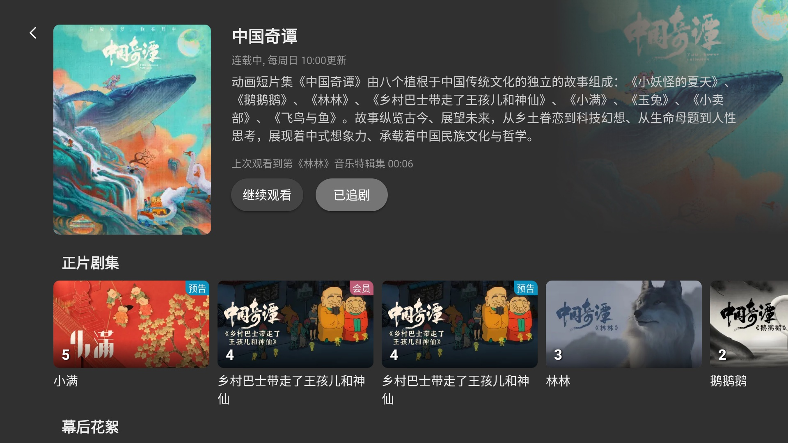

B站TV端选官方还是第三方？BBLL 放在同类里到底是什么位置
B站大屏客户端的选择一直众说纷纭，官方TV版、各种魔改盒子固件、独立第三方APP轮番登场。这篇把BBLL放进这个坐标系里，聊聊它凭什么在老用户圈子里站得住。
B站大屏客户端这个类目，从最早的官方TV版到后来各路大神的盒子固件魔改，再到现在一批独立的第三方应用，选择面其实比想象中宽。但真正能长期留在客厅电视上的，数来数去就那几个。BBLL 就是其中之一——它的官网上能看到完整的版本迭代，不是最早出现的，也不是功能最激进的，但在老用户的口碑里，它的位置相当稳。这篇把它放进同类软件的坐标系里，聊聊它凭什么站住，以及它为这些优势付出了什么代价。
定位：同类格局里的那个"中间派"
先把同类软件的格局说清楚。官方TV版胜在合规稳、账号体系原生，但功能上相当克制——它是给"买了电视想装上就能用"的用户做的。各路盒子固件魔改的方向是"能装的都装上"，但稳定性和安全边界很难保证，而且跟着固件走，刷一次丢一次。还有一批主打特定功能的小工具，有的只做投屏、有的只做下载，单点不错但覆盖不了日常观看的全部需求。
BBLL 走的是中间路线：不刷固件、不依赖特定盒子硬件、不碰灰色地带，在合规的前提下把大屏观看这件事做透。它的目标用户很明确——不想折腾刷机、又嫌官方TV版功能太素、想在电视上获得接近手机端完整体验的人。
差异化：三个别家没做透的点
说三个让 BBLL 从同类里跳出来的细节，这些都不是噱头层面的功能堆砌，而是真正解决大屏观看痛点的设计。
杜比全景声的自动联动
第一个是音轨。同类工具大多把画质拉到 4K 就停了，声音这块基本随缘。BBLL 从 v1.2.7 起加入了杜比全景声和无损音轨支持，而且做了一个很省心的联动——如果你把清晰度选到 Dolby Vision 或 8K，应用会自动把音轨切到杜比，不需要你再进一遍菜单手动选。这在大屏配上像样音响的家里，带来的提升比你想象中要明显，尤其是看番剧和电影区的高规格内容。
当然这也有条件：视频本身得有杜比音轨，电视或音响得支持解码。设备不支持的时候会出现无声或杂音，这时切回普通音轨就好。BBLL 在这点上做得比较诚实，不吹"百分百支持"，BBLL文档里明确写清了条件和排查顺序。
进度记忆的多入口串联
第二个是进度记忆。看过 B 站的人都知道，官方 APP 的进度跟着账号走，但不同端之间偶尔会出现进度不同步或者刷新不及时的情况。BBLL 把进度这件事做细了：同一份进度在历史记录页、番剧详情页、播放器锁屏恢复三个入口都能精确接到——精确到分秒，而且历史列表里是即时刷新的，不用等下次打开才看到。
更实在的是番剧详情页的那个按钮设计。追了一部番之后，详情页主按钮直接变成"继续观看"，旁边还写着"上次观看到第几集几分几秒"。对于每周追更两三部番的人来说，这个小细节省下了每次找历史记录的那点时间，积累起来就是体验的差距。

播放设置的"调一次长期生效"
第三个是播放设置体系。同类应用大多把倍速、清晰度这些选项做成"每次播放都要重新调"的临时菜单，BBLL 把它们分成了两层：临时调整走播放页的右侧菜单，长期习惯走设置页固化。默认清晰度、默认倍速、默认投币数、上下集切换按钮、常驻进度条——这些选项全在设置页，方向键上下选、左右切档位，实时生效。
它甚至还给了三组预设思路：追剧党把清晰度拉满开上下集按钮、睡前挂机党开播完自动关闭加弹幕占屏比调到八分之一、看教程的开 1.25 倍速加常驻进度条。不一定非要照抄这个预设，但它说明了一点——开发者真的在想"不同的人看视频的节奏不一样"这件事，而不是把所有选项堆在那里让用户自己摸。
取舍：为这些优势付出了什么
没有免费的午餐，BBLL 选择了中间路线，也就放弃了一些东西。
首先是上手门槛。官方 TV 版装上就能用，BBLL 从下载拿到后需要扫码登录 B 站账号才能解锁追番同步、历史记录这些核心功能，不登录只能看公开内容。对只想看一眼的临时用户来说，这个门槛确实存在。
其次是平台覆盖。BBLL 主打安卓 TV 和 TV Box 生态，iOS、PC、手机端都没有官方客户端。如果你家里既有电视又有 iPad，账号进度能同步过来，但 iPad 上没法装 BBLL 本身，还是得用 B 站官方 APP。
还有一个取舍是功能边界。BBLL 不做下载缓存、不做投屏接收端、不做直播源聚合——这些在一些同类应用里是标配，但 BBLL 明确把自己定位在"观看"这一件事上。想下载视频到本地看？请移步手机端或 PC 端。想投屏到电视？用 B 站自带的投屏功能或者系统级投屏。
选购结论：谁该选它，谁该选别的
说人话的版本：
适合选 BBLL 的：已经有安卓 TV 或 TV Box、不想刷机折腾、追求大屏观影完整体验、家里有像样音响能用上杜比的人。如果你每周追两三部番、偶尔看个纪录片或教学视频，BBLL 的进度记忆和播放设置会让你用得很舒服。
不适合的：只有 iOS 生态设备、只看公开视频不想登录、或者需要下载缓存和投屏接收这类扩展功能的人。官方 TV 版或原生 B 站 APP 更省事。至于那些喜欢刷固件装一堆东西的折腾党——BBLL 也能装在盒子上，但它本身不是为折腾设计的，别拿它跟魔改固件比功能数量。
最后给一句明确的推荐：如果你有一台安卓 TV，又嫌官方 TV 版太素、刷固件又怕出事，装一个 BBLL 试试，大概率会留下来。
资料层面的东西不想多说——这套资料从一开始就同步在三个仓库里，GitHub是主维护地，Gitee和GitCode给国内访问慢的朋友一个备份选项。